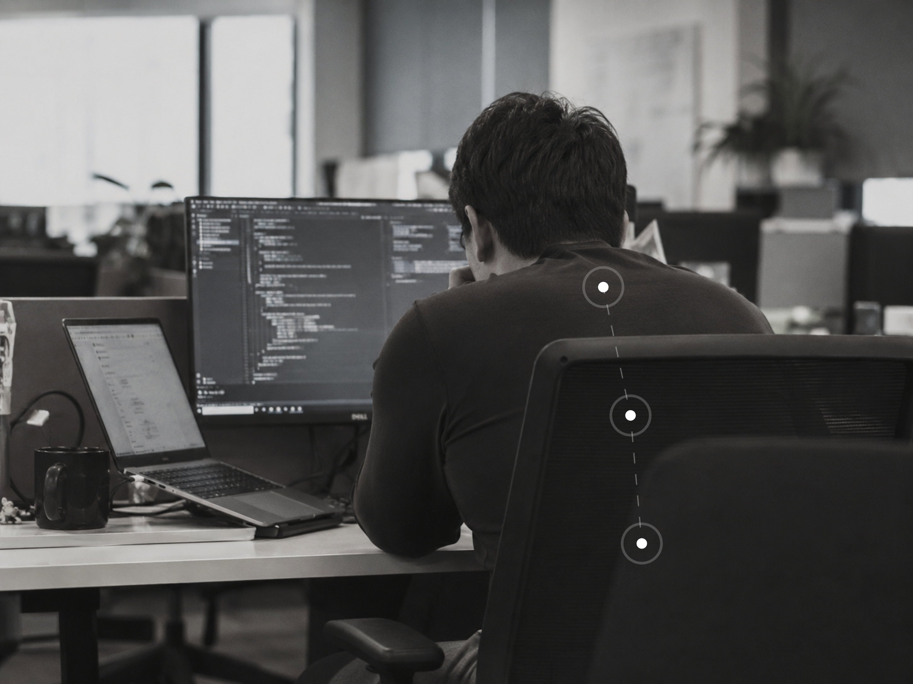
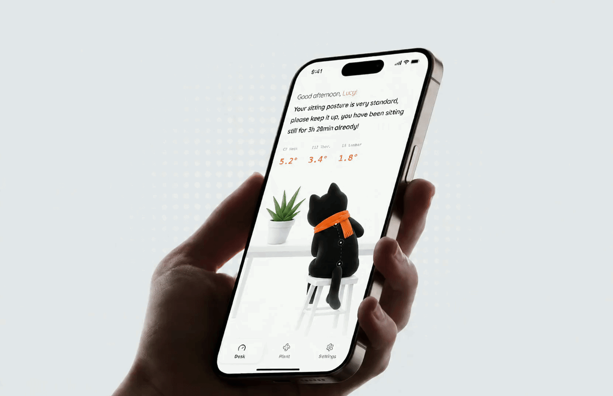
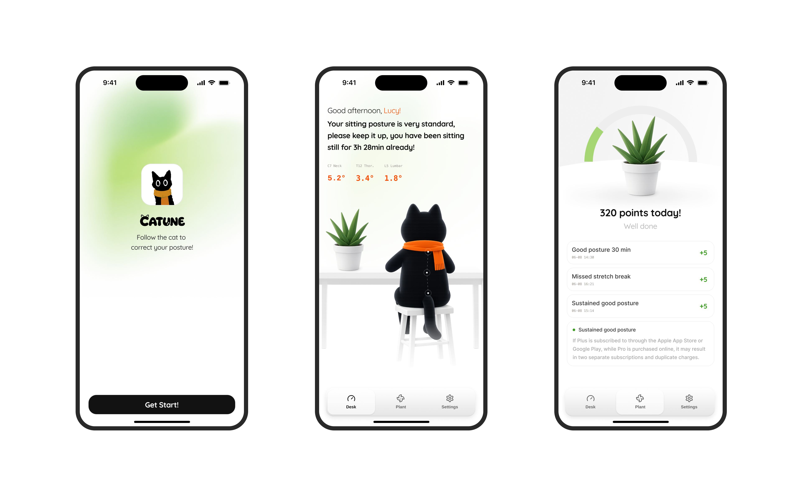

01 · 痛点与创意
问题不是不知道正确坐姿，而是不知道自己何时开始坐歪
用户缺少的不是知识，而是姿态正在变化时的感知与反馈。

01定时提醒不懂姿态
知道坐了多久，却不知道此刻坐得怎样。
02持续摄像不适合办公室
隐私压力、固定视角与持续采集，使它难以成为安静的日常工具。
03事后发现错过纠正时机
真正有价值的反馈，应该发生在姿态正在变差的当下。
01 · 痛点与创意
让大模型知道：现实世界中，此刻正在发生什么
传感器给模型“身体感知”，记忆给模型“长期上下文”，Qwen 给用户“自然回应”。
传感器
姿态、角度、变化方向与持续时间，让模型不必等待用户描述问题。
本地记忆
提醒偏好、容易不适的位置、历史反馈与曾经有效的动作。
端侧 Qwen
结合身体状态与个人上下文，生成短、自然、可以立即执行的建议。
02 · 产品体验
从一次姿态变化，到一次真正完成的纠正
发生时看见、当下能行动、长期有反馈。

网络或模型不可用时，核心监测、提醒与本地建议仍然运行。
02 · 产品体验
三个核心页面，连接当下反馈与长期改变
Desk 看现在，Plant 看积累，Settings 管理设备、模型与隐私。

Desk · 负责现在
黑猫同步姿态，结合角度、状态和端侧建议，让用户一眼知道正在发生什么。
Plant · 负责长期
植物成长、每日姿态评分、日报与周报，把微小改善变成可见的积累。
Settings · 负责控制权
硬件连接、提醒偏好、模型选择、教练记忆与隐私管理都由用户掌握。
02 · 用户价值
更及时、更安心、更容易坚持的改变
Catune 的价值不是多一个模型，而是帮助用户察觉、行动并坚持。
发生时行动
从事后发现，变成姿态正在变差时即可纠正。
不拍人、不上传
看见姿态变化，不需要看见用户；核心数据优先留在手机本地。
一次一个动作
不只告诉用户哪里不对，还告诉用户现在能做什么。
把提醒变成陪伴
猫负责当下，植物记录长期，记忆让反馈越来越懂用户。
02 · 系统架构
模型层、应用层、硬件层：端侧为主，云端增强
实时姿态与个性化建议不依赖云端；云端只承担可插拔的视觉增强能力。
流式建议 · 本地记忆注入
SME2 / i8mm / NEON 自适应
长度 / 语言 / 禁词 / 降级
可插拔 · 断网不阻塞主链
Desk · Plant · Settings
Android / iOS / Web 一套 TS
成长 / 日报 / 训练
本地语义记忆
FileSystem · Vibration
MNN JNI / Native Module
模型、数据与记忆载体
17 字节 Notify
目标扩展颈 / 胸 / 腰
02 · 硬件架构
目标硬件：一块主控、一块多路器、三个姿态节点
TCA9548A 隔离同地址 I²C 设备，ESP32-S3 统一采样并通过 BLE 向手机发送颈、胸、腰数据。
Catune 手机
Android App
端侧 Qwen + MNN
BLE Central
ESP32-S3
节点调度
姿态包聚合
BLE Notify
TCA9548A
通道 0 / 1 / 2
隔离相同 I²C 地址
flowchart LR Phone[Android 手机] <-->|BLE| ESP[ESP32-S3] ESP --> TCA[TCA9548A] TCA --> N[BNO08x 颈] TCA --> T[BNO08x 胸] TCA --> L[BNO08x 腰]
03 · 核心创新
让大模型进入真实身体场景的方法
不是在产品中增加聊天框，而是让模型获得现实输入、长期记忆与可执行输出。
物理状态上下文化
把姿态、角度、方向和持续时间转成 Qwen 可以理解的身体上下文。
本地语义记忆增强
按当前姿态检索偏好、困扰和有效动作，让相同问题得到不同回应。
场景化 LoRA 对齐
将短句、动作标签、温和语气和非医疗边界训练进模型权重。
端侧与云端协同
实时建议端侧完成；图片评估按能力选择本地、云端或示例降级。
模型与设备自适应
依据内存、存储和 CPU 能力推荐模型，自动选择 SME2、i8mm 或 NEON。
角色与反馈一致性
系统提示、微调数据、记忆反馈和安全兜底维持同一黑猫教练角色。
04 · DEMO 与实机
真实姿态变化，如何成为一次完整反馈
连接 → 校准 → 动作 → 实时变化 → 建议 → 恢复；全程不依赖场馆网络。
→ 猫与角度变化 → 端侧建议 → 恢复坐直
assets/demo-hardware.mp4 · 60–90 秒 · 离线 H.26405 · 大模型实证
端侧证明：Qwen、MNN 与 SME2 运行链路
从“手机支持”到“推理库支持”，再到“运行时真正选中”，每一层都有可核对证据。
TTFT · Prefill · Decode TPS · Tokens · 三轮均值
assets/sme2-benchmark.png`hw SME2=true`，目标手机暴露 SME2 能力。
`lib SME2=true`，APK 原生库具备对应能力。
三者齐全后，才对外声称运行时已选中 SME2。
中文推理与规则降级均可在手机本地完成。
05 · 大模型实证
微调证明：模型学会了 Catune 的场景表达
训练目标不是更会聊天，而是更短、更准、更可执行，并保持安全边界。

[动作:挺腰]
上背悄悄塌下来了，挺一下胸口、打开肩膀～
[动作:胸椎伸展]
eval loss：0.2743 → 0.1058
LoRA 已完成训练、adapter 生效校验与对比；尚未合并、转 MNN 并部署到当前真机。
05 · 大模型实证
记忆证明：一次反馈，改变下一次建议的上下文
问卷、偏好与有效动作形成可检索的本地语义记忆；仅在相关场景中注入 Qwen。
assets/memory-onboarding.pngassets/memory-feedback.pngassets/memory-settings.png05 · 大模型实证
从物理输入到个性化输出，一条可逐层复验的链路
真实输入 + 长期记忆 + 端侧推理 + 输出验收 + 产品行动。
BNO085
四元数 · BLE
姿态 · 角度
方向 · 时长
问卷 · 偏好
历史反馈
MNN · 流式
设备自适应
提醒 · 动作
Plant · 报告
06 · 后续计划
当模型获得身体上下文，它能理解的不只是坐姿
从端侧坐姿教练，走向低隐私、可持续、可拓展的身体状态智能。
更完整的身体感知
从单个胸背节点扩展到颈、胸、腰，以及手腕、踝关节等多部位节点。
更丰富的端侧模型
将视觉评估进一步迁移到端侧，并在 SME2 设备上运行更高能力模型。
康复辅助场景
在专业规则与安全边界下，探索术后或骨折恢复期的活动范围记录、训练依从性和阶段反馈。